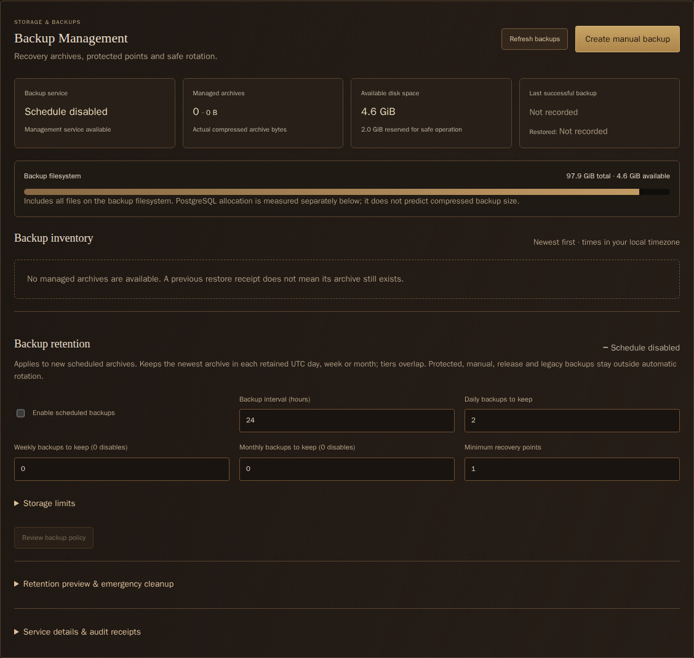
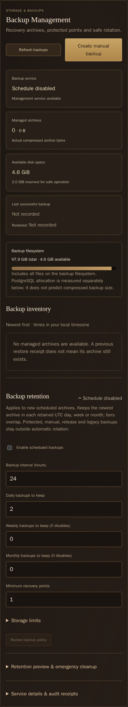
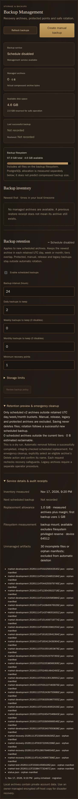

Actual authenticated production, America/Denver. Merged PR #33, application e49de6a. Schedule disabled; zero archives. Captures precede removal of the authorized temporary release dump, so final free space is higher. No archive or policy mutation was exercised through production controls.



Acceptance, preservation and rollback · HTTPS checks · Screenshot hashes